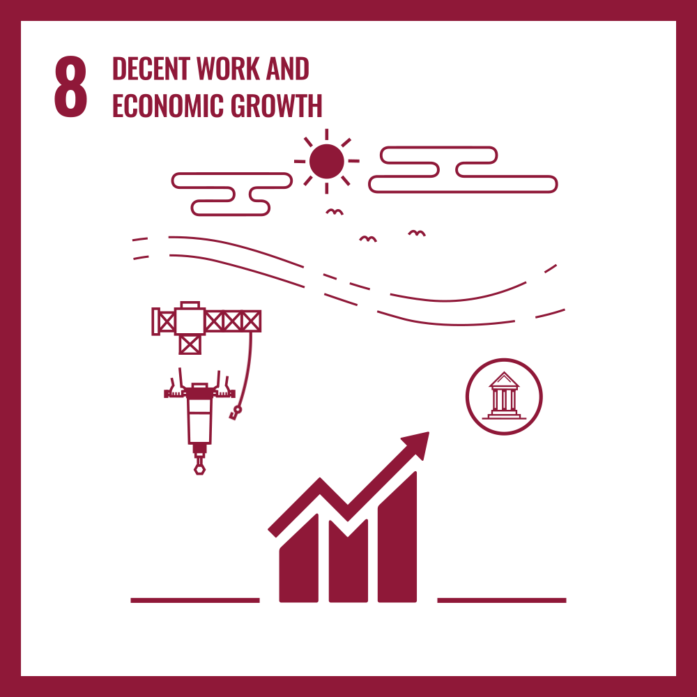
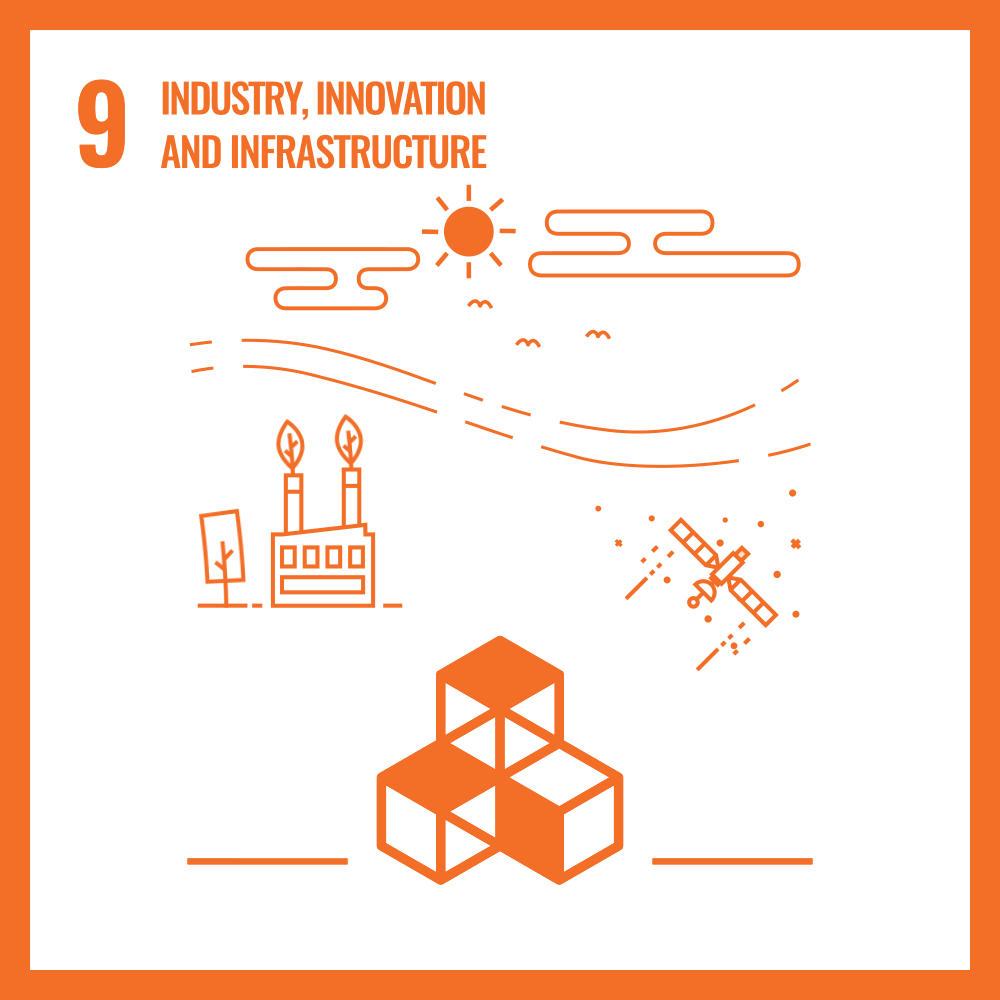
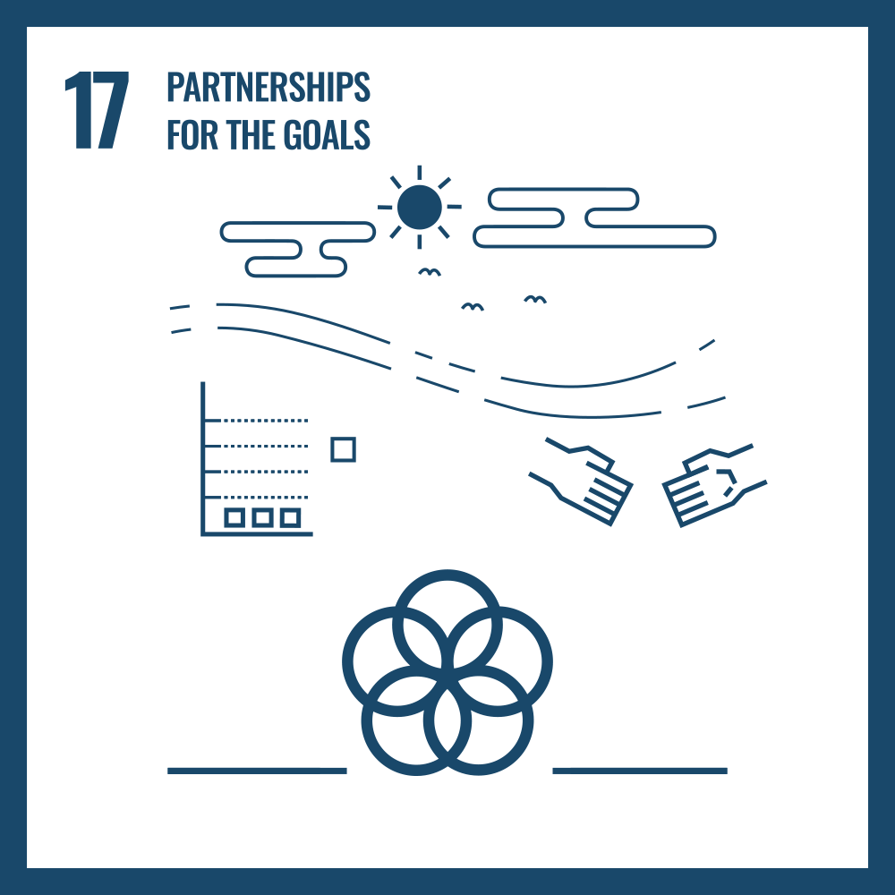

About the Framework
The Main Goal
The primary objective of the Gradual Reconciliation and Scalable Yield Architecture (G.R.A.S.Y.A.) is to provide a robust, reliable framework for seamless database modernization and migration.
By utilizing the proprietary Trickle-Down Method, the framework ensures that legacy systems can transition to modern infrastructure with extreme structural integrity. The ultimate target of this architecture is to achieve Relative Zero-Downtime, allowing critical applications to remain highly available during massive data synchronization processes.
This approach prevents data loss, reduces migration bottlenecks, and provides scalable solutions for organizations upgrading their technological backbone.
SDG Alignment

SDG 8: Decent Work
G.R.A.S.Y.A. aligns with SDG 8 by promoting economic productivity through technological upgrading, specifically by automating complex database migrations that traditionally burden engineering teams with high-stress maintenance tasks. By transforming manual, error-prone data reconciliation into a reliable and scalable automated process, the framework removes technical bottlenecks that hinder business progress.

SDG 9: Industry, Innovation, and Infrastructure
G.R.A.S.Y.A. contributes directly to building resilient infrastructure and fostering innovation. By modernizing database architectures, it allows industries to scale their technological capabilities efficiently and sustainably, serving as a backbone for modern digital infrastructure.

SDG 17: Partnerships for the Goals
Innovation thrives through shared knowledge. Our development team operates on a philosophy of open collaboration, sharing our methodologies, technical findings, and the framework itself to help the broader technical community address complex database synchronization challenges together.